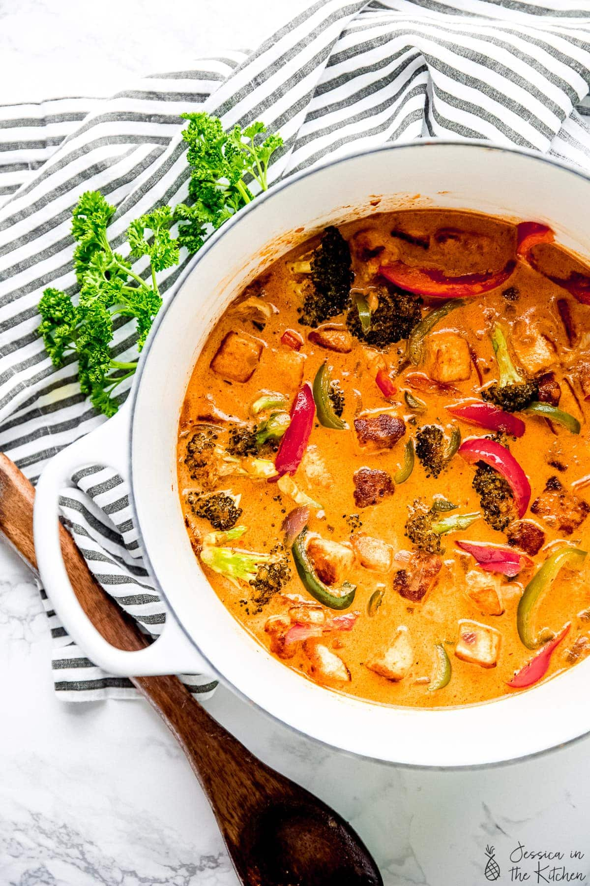

Main Page
Vegan Thai Red Curry with Tofu

Takeout Thai food is good, but when you can make it at home, it’s even better!
Red curry paste is a fairly mild Thai curry paste made with red chilies, coriander roots and leaves, lemongrass, garlic, shallots, and galangal.
Ingredients
Tofu Marinade
- tofu
- coconut milk
- red curry paste
- salt and pepper
- cornstarch
- coconut oil
Red Curry
- Coconut oil
- Red curry paste
- Red onion
- Garlic
- Broccoli
- Red bell pepper
- Green bell pepper
- Carrots
- Sea salt
- Ground black pepper
Steps
- Prepare the tofu. After pressing, cut the tofu into cubes, or tear it into cube size pieces for extra texture.
- Mix the marinade. Combine all of the ingredients except for the oil in a large bowl. Add the tofu cubes and toss to coat. Cover and marinate for at least 15 minutes.
- Cook the tofu. Heat the oil in a pan over medium-high heat. Once hot, add the tofu cubes and cook until all sides are browned and crispy. Remove the tofu from the pan and transfer it to a plate.
- Cook the aromatics. Return the pan to medium-high heat, and add the coconut oil. Stir in the curry paste and cook for about a minute, or until fragrant. Add the onion and cook until it’s slightly translucent, about 8 minutes, then stir in the garlic.
- Sauté the vegetables. Add another tablespoon of coconut oil to the pan, followed by the broccoli, red bell pepper, green bell pepper and carrots. Stir to coat, then stir in the sea salt, black pepper, coconut sugar, and liquid aminos. Reduce heat to medium and cook until the carrots are tender-crisp, about 10-15 minutes.
- Finish. Pour in the coconut milk and stir, then add the tofu. Simmer for about 5 minutes, then finish with a squeeze of lime juice and remove from heat.
Back to top